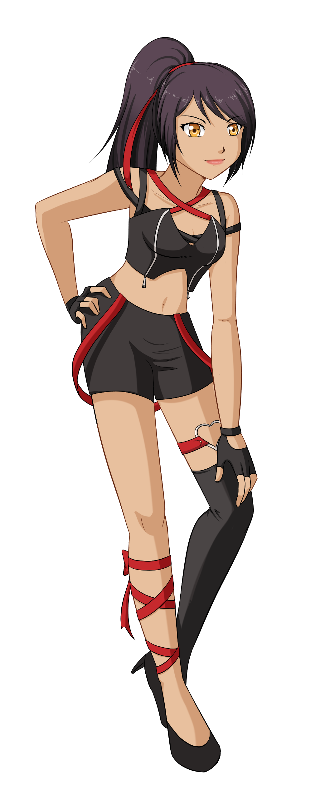
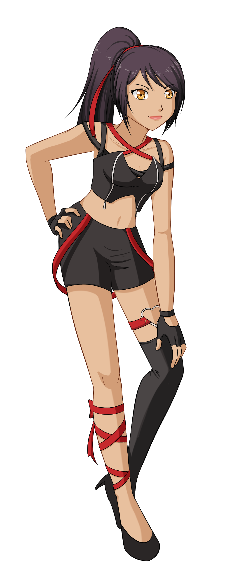

Shini Thana
name: Shini Thana
age: 17
date of birth: 11/13
hair color: black
hair style: long ponytail with red ribbon
skin tone: soft light brown
eye color: gold
height: 6ft
bust: 38D
ethnicity/race: African/Japanese
citizenship: Tŏngī Kōtei-fū
faction: Starlite 7th
key attribute: vain
left-handed
body type: slim and tall
Character Bio/Personality:
Shini generally thinks she's better than everyone else, a complex that is not helped by the fact that she generally is better than everyone else.
Where Itami is one who shows emotion easily, Shini is one who feels emotion deeply. She loves with her whole heart and hates with her whole heart,
but very rarely lets it show. In fact, the only one she ever shows a soft expression to is Itami.
Shini is in the pop group Rainbow Star with her twin sis, Itami.